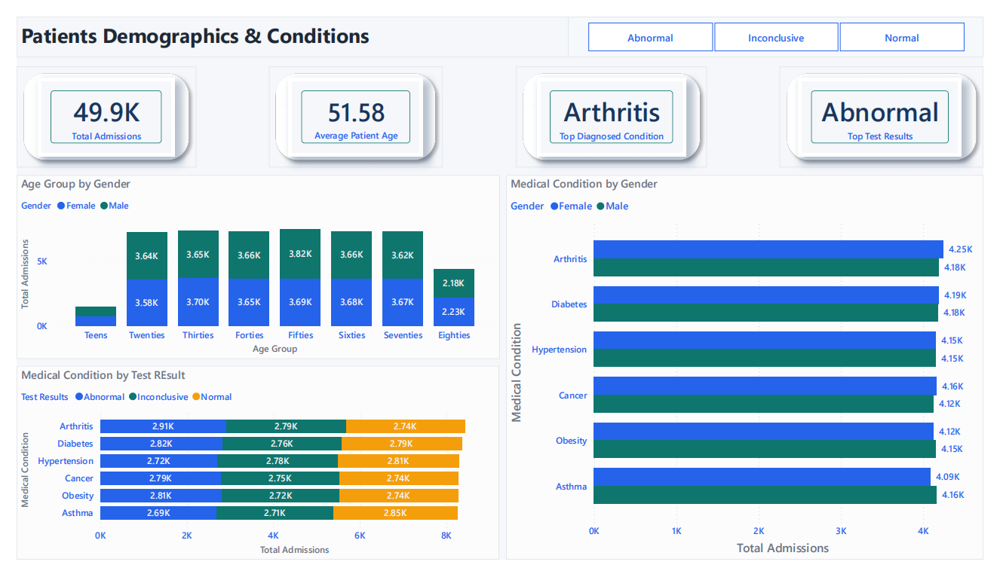
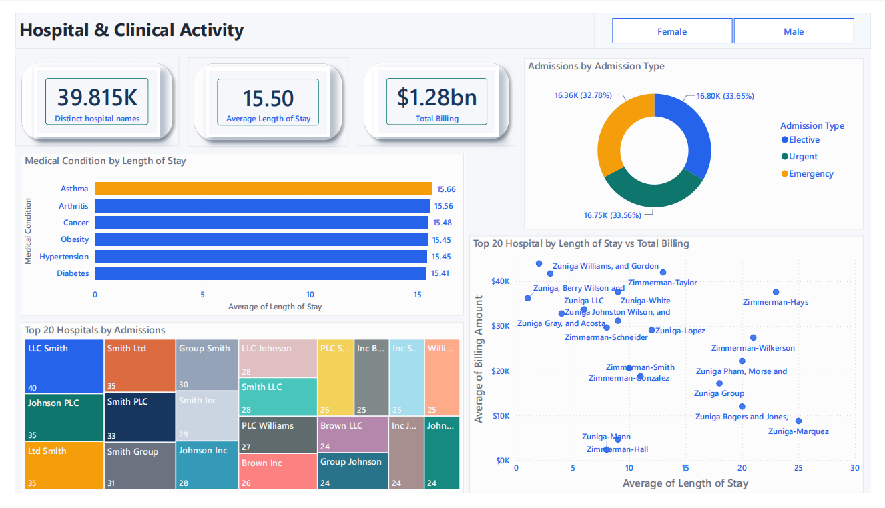
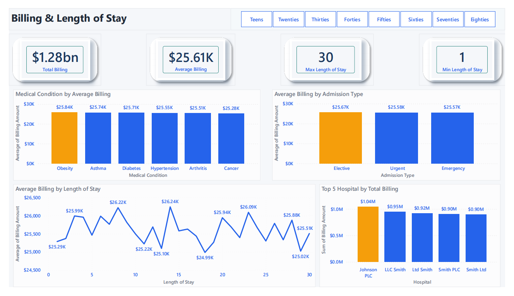
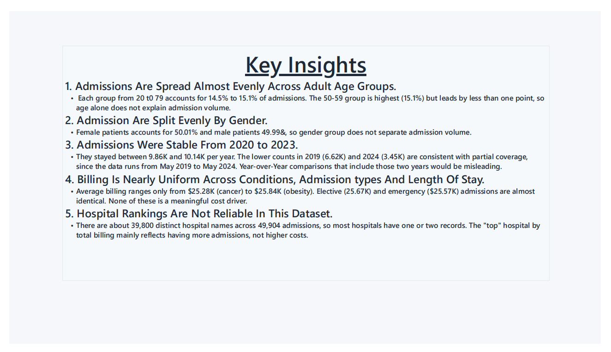

Business problem
Healthcare operational data can contain inconsistent records and repeated encounters. The project turns the raw dataset into an analytical view for understanding admissions, billing and length-of-stay patterns.
Data preparation
Records were typed and standardized in Power Query. Duplicate records were reviewed and removed using available encounter-related fields, with Age excluded from duplicate comparison because it was the differing field. Negative billing records were excluded because the analysis treats billing amount as a positive charge.
Key findings
Dashboard
The Power BI report covers healthcare overview, demographics and conditions, hospital and clinical performance, billing and length of stay, and key insights.





Documentation
The repository contains the project documentation and supporting analytical files, allowing the workflow to be reviewed beyond the dashboard.